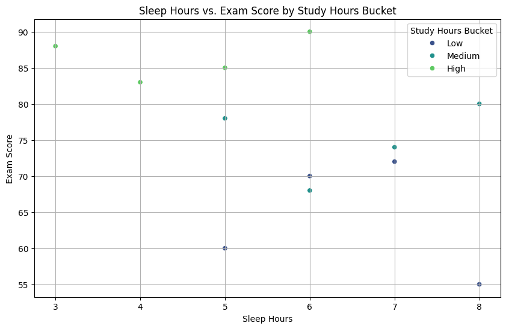

Data Visualization Gallery
.png)
📚 Study Hours vs Exam Score
What it shows: This scatter plot displays the relationship between hours spent studying and the resulting exam scores for 12 students.
Analysis: There is a strong positive correlation between study hours and exam scores. As study hours increase from 2 to 10 hours, exam scores consistently rise from 55 to 90. The trendline shows a slope of approximately 4.33, meaning each additional hour of study is associated with a 4.33-point increase in exam scores.
Key Insight: Students who studied 8+ hours all scored above 83, while those studying 4 or fewer hours scored 72 or below, highlighting the critical importance of study time.

😴 Sleep Hours vs Exam Score
What it shows: This scatter plot displays the relationship between sleep hours and exam scores, with points colored by study hours buckets (Low: 0-4, Medium: 5-7, High: 8+).
Analysis: Unlike study hours, sleep hours show no clear correlation with exam scores. Students with high scores (80-90) appear across all sleep ranges from 3-8 hours. The color coding reveals that study hours, not sleep hours, determine the score.
Key Insight: Student I (9 study hours, 3 sleep) scored 88, while student L (7 study hours, 8 sleep) scored 80 - demonstrating that study intensity outweighs sleep duration in determining exam performance.
📊 Comparative Analysis Summary
- Most Predictive Factor: Study hours strongly predict exam scores, while sleep hours show almost no predictive power.
- Optimal Strategy: Students should prioritize 7-10 hours of study for scores above 80.
- Outlier Identified: Student L studied 7 hours but scored only 80, slightly below expectations.
- Practical Recommendation: Focus on quality study time rather than sacrificing sleep.